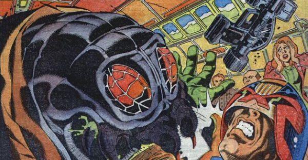

A shape-shifting, predatory alien stalks the Mega-City!
Art by Ron Smith
| Story Title | Parts | Pages | w indicates a wraparound coverCovers | Year(s) | Issues | Writer | Artist | Colourist | Letterer |
|---|---|---|---|---|---|---|---|---|---|
From Judge DreddNosferatu | 4 | 26 | 432: Ron Smith 433: Ron Smith 2 | 1985 | 430-433 | Alan Grant, John Wagner | Ron Smith | <-- 8pp, [b&w] | Tom Frame |
From Judge DreddBlack Widow | 3 | 30 | 0 | 1991 | Reprints: X4M1.07-1.09 | John Wagner | John Hicklenton | <-- | Tom Frame |
From Judge DreddHorror In Emergency Camp 4 | 4 | 24 | 1427: Cliff Robinson 1 | 2005 | 1425-1428 | John Wagner | D'Israeli | Len O'Grady | Tom Frame |
| year | episodes | pages |
| 1983 | 0 | 0 |
| 1984 | 0 | 0 |
| 1985 | 4 | 26 |
| 1986 | 0 | 0 |
| 1987 | 0 | 0 |
| 1988 | 0 | 0 |
| 1989 | 0 | 0 |
| 1990 | 0 | 0 |
| 1991 | 3 | 30 |
| 1992 | 0 | 0 |
| 1993 | 0 | 0 |
| 1994 | 0 | 0 |
| 1995 | 0 | 0 |
| 1996 | 0 | 0 |
| 1997 | 0 | 0 |
| 1998 | 0 | 0 |
| 1999 | 0 | 0 |
| 2000 | 0 | 0 |
| 2001 | 0 | 0 |
| 2002 | 0 | 0 |
| 2003 | 0 | 0 |
| 2004 | 0 | 0 |
| 2005 | 4 | 24 |
| 2006 | 0 | 0 |
| 2007 | 0 | 0 |